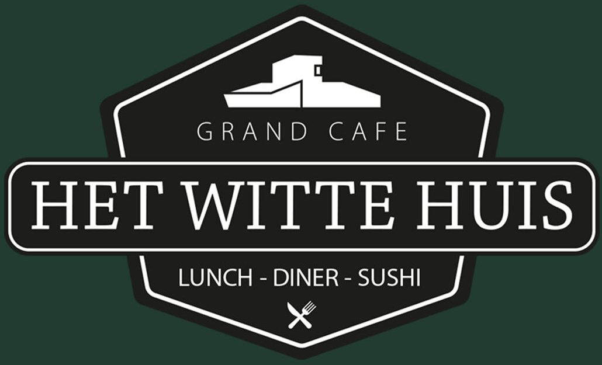
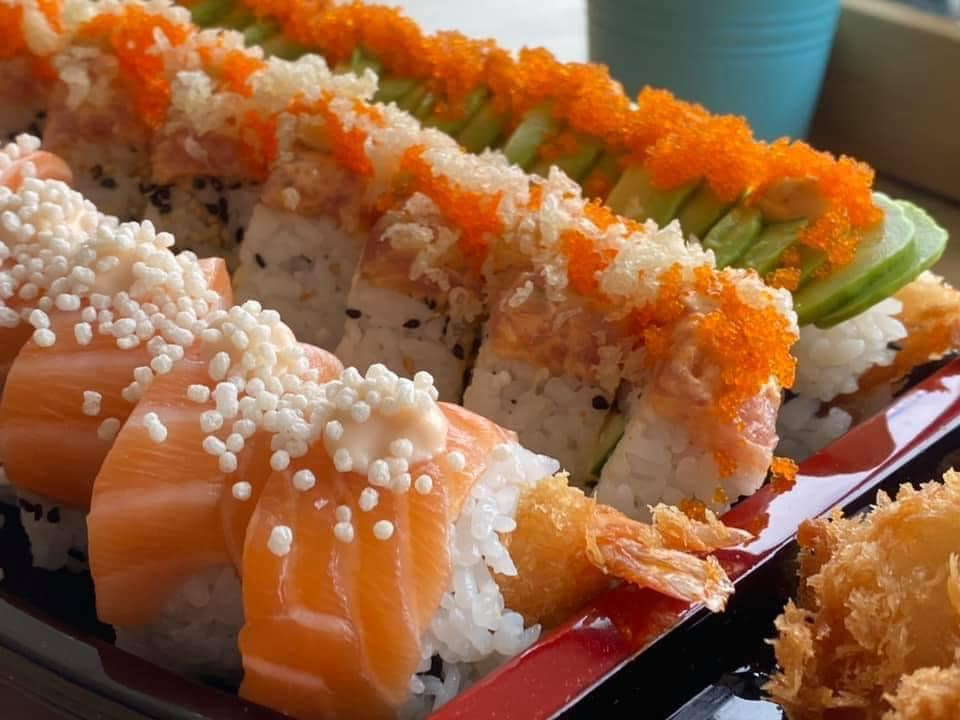
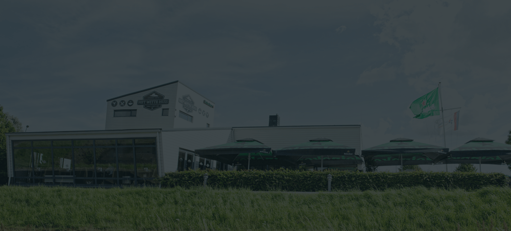
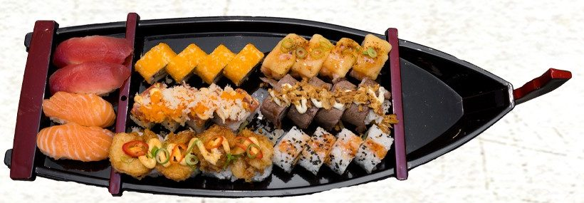
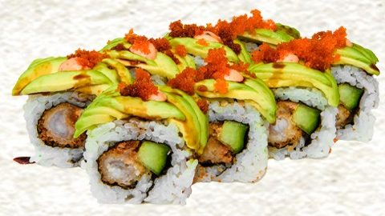
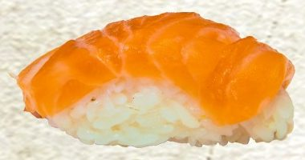
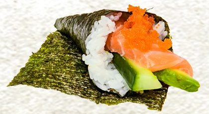
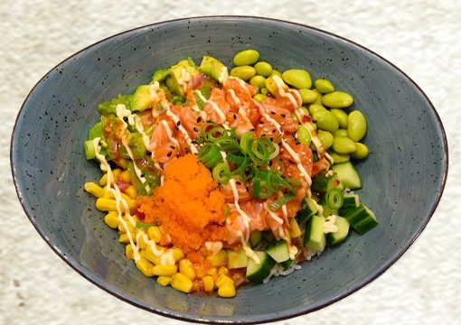
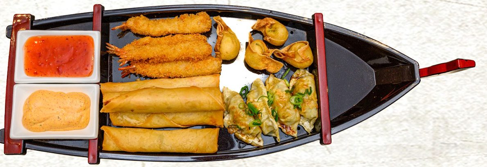

Lunch, diner en sushi aan de haven van Drimmelen
Genieten op het terras aan het water of rustig dineren binnen. Met een gewone keuken én een eigen sushikeuken onder één dak.
Keuken elke dag open van 10:30 tot 21:00

Dagelijks verse sushi, ook thuisbezorgdEen eye-catcher aan de haven
Grand Café Het Witte Huis is dé plek om na een dagje varen, een wandeling in het nabije natuurgebied of gewoon een dagje weg neer te strijken met een hapje en een drankje.
Niet alleen de haven van Drimmelen is indrukwekkend; ook Het Witte Huis zelf valt meteen op. Op de kaart staan veelzijdige gerechten van vis tot vlees, een uitgebreide lunchkaart waarop je je eigen lunchplank samenstelt, en desserts om de avond mee af te sluiten. Het unieke concept: naast de reguliere keuken een aparte sushikeuken.
Naast verse vis, echt een aanrader, schenken we een breed assortiment dranken. De bijpassende wijnen worden verzorgd door een lokale wijnboer.
Het Witte Huis staat voor een rustige ambiance, een unieke locatie en gezellig, bekwaam personeel. In 2020 zetten eigenaren Ronnie, Joey en Kristel met hun eigen ervaring een nieuwe stap met het ‘nieuwe’ Witte Huis. We verwelkomen je graag bij ons familiebedrijf. Tot snel!
Een intolerantie of allergie? Laat het ons weten. Onze koks zijn hierin gespecialiseerd en zoeken een smaakvolle, passende oplossing. Vraag gerust naar onze allergenenkaart.

- Twee keukensFrans/Nederlandse keuken en een eigen sushikeuken
- Aan het waterTerras aan de jachthaven van Drimmelen
- Lokale wijnWijnen verzorgd door een lokale wijnboer, met wijntips bij de gerechten
Sushikaart
Onze sushikeuken maakt dagelijks verse sushi. Eet hem bij ons aan de haven, of laat hem thuis bezorgen.
Bel om sushi te bestellen
- Zalmlicious15,95
- Sushi mix16,25
- Vegetarische19,95
- Surf en turf23,95
- Deluxe sushi klein26,95
- Tempura mix29,95
- Sushi to share43,50
- Witte Huis groot47,95
- Super sushi49,95
- Deluxe groot57,50

4 stuks, of 8 stuks
- California rol6,9510,95
- Tonijn salade rol6,9510,95
- Chicken rol6,9510,95
- Tempura rol6,9510,95
- Crispy rol6,9510,95
- Crispy crunch rol6,9510,95
- Chicken cheese rol7,5011,95
- Chicken deluxe rol8,0012,50
- Unagi (paling) rol9,0013,95
- Rainbow rol9,0013,95
- Flamed zalm cheese rol9,0013,95
- Beef roomkaas rol9,0013,95
- Zalm roomkaas rol9,0013,95
- Surf & turf rol9,9514,95
- Vegan dragon rol9,9514,95
- Dragon rol9,9514,95
- Carpaccio rol9,9514,95
- Spicy zalm rol9,9514,95
- Krab dragon rol10,2515,45
- Spicy tuna rol10,5015,95
- Spicy gamba rol10,5015,95
- Zalm oshi (6 stuks)13,95
Optioneel: verse wasabi + 2,-

2 stuks
- Zalm nigiri4,95
- Ebi nigiri4,75
- Tamago nigiri4,75
- Inari (tofu) nigiri4,75
- Beef tataki nigiri5,10
- Zalm tataki nigiri5,10
- Tonijn nigiri5,50
- Zalm cheese nigiri5,25
- Unagi (paling) nigiri5,10
- Avocado nigiri4,75
- Zalm tataki deluxe nigiri5,50
- Tonijn truffel nigiri6,00
Maki 6 stuks
- Komkommer maki4,25
- Krab maki4,25
- Wakame maki4,25
- Tamago maki4,25
- Avocado maki4,25
- Zalm maki4,65
- Zalm avocado maki4,85
- Tonijn maki5,25
Gunkan 2 stuks
- Mais gunkan4,25
- Wakame gunkan4,25
- Tonijnsalade gunkan4,25
- Krabsalade gunkan4,25
- Masago gunkan4,25

- California temaki4,25
- Veggie temaki4,25
- Tempura temaki4,50
- Chicken temaki4,50
- Zalm temaki4,75
- Tuna temaki5,95

Poke bowls
- Veggie poke bowl14,50
- Krabsalade poke bowl14,95
- Chicken poke bowl15,95
- Zalm poke bowl16,95
- Spicy zalm poke bowl17,50
- Beef teriyaki poke bowl17,50
- Tuna poke bowl18,50
- Buikspek poke bowl18,50
- Spicy tuna poke bowl18,95
- Spicy gamba poke bowl18,95
Sashimi
- Zalm 6 stuks12,50
- Zalm 12 stuks24,50
- Tonijn 6 stuks14,95
- Tonijn 12 stuks29,50
De poke bowl wordt geserveerd met rijst, mais, komkommer, avocado, sojabonen, unagi saus, chilisaus, mayonaise, masago, bosui en sesamzaad. Spicy zalm en tuna met spicy mayo, beef teriyaki zonder mayonaise.

- Eby fry 3 stuks5,95
- Vietnamese kip loempia 3 stuks5,95
- Zeewier salade4,95
- Edamame (sojabonen)5,50
- Krabsalade5,50
- Gyoza chicken 3 stuks5,95
- Spicy edamame6,50
- Gyoza vegetarisch 3 stuks5,95
- Crispy chicken5,95
- Yakitori spies 3 stuks5,95
- Oosterse snackmix 16 stuks20,95
- Party oosterse snackmix 32 stuks34,95
Heb je een allergie? Vraag dan naar onze allergenenkaart. Sushikaart (pdf)
Een tafel reserveren
Reserveringen zijn altijd voor tafels binnen in het restaurant. Een tafel op het terras reserveren is niet mogelijk. Op het tijdstip dat je reserveert, verwachten we je aan tafel.
Openingstijden keuken
| Maandag | 10:30 – 21:00 |
|---|---|
| Dinsdag | 10:30 – 21:00 |
| Woensdag | 10:30 – 21:00 |
| Donderdag | 10:30 – 21:00 |
| Vrijdag | 10:30 – 21:00 |
| Zaterdag | 10:30 – 21:00 |
| Zondag | 10:30 – 21:00 |
Kom ons team versterken
Ons team bestaat uit ervaren krachten aangevuld met jong personeel, van wie sommigen al een tijd bij ons werken. Op dit moment zoeken we:
Sushi chef
Wij zijn op zoek naar iemand die ons sushiteam komt versterken. Ben jij iemand die onze gasten blij wil maken met heerlijke sushi? Dan willen wij jou!
Jouw eigenschappen
- Gastgericht
- Collegiaal
- Resultaatgericht
- Innovatief
- Snel
- Stressbestendig
- Verantwoordelijkheid nemend en dragend
- Verstand van goede hygiëne
Jouw taken
- Koken van de sushirijst
- Het bereiden van de sushi
- Mooi presenteren van de sushi
- Bijhouden van de voorraad
- Zorgen voor een goede hygiëne in de keuken
- Snijden van vis
Solliciteren? Mail naar info@grandcafe-hetwittehuis.nl.
Zelfstandig werkend kok
Voor onze Frans/Nederlandse keuken zoeken wij een zelfstandig werkend kok met ervaring aan de warme kant, met gerechten als rump eye steak, bavette steak, zeewolf, matelot en plant-based tournedos. Aan de warme kant zorg je dat de gerechten op de juiste tijden meegaan; ook de communicatie met onze sushikeuken loopt via de warme kant. We hebben een chef-kok en sous-chef, maar er is volop ruimte voor eigen inbreng bij een nieuwe menukaart. Een opleiding is geen vereiste, we leren het je graag.
Wat wij zoeken
- Affiniteit met koken
- Gemotiveerd
- Leergierig
Wat jij gaat doen
- Allround kokswerkzaamheden
- Communicatie met personeel
- Warme kant draaien
Wat wij bieden
- Flexibele werkuren
- Salaris op basis van cao en ervaring
- Weekend vrij in de maand
- Lunch
- Diner
Solliciteren? Mail naar info@grandcafe-hetwittehuis.nl.
Medewerker bar/bediening
We hebben twee keukens: een sushikeuken en een keuken met vis- en vleesgerechten. Als medewerker bar en bediening ben jij het visitekaartje van Het Witte Huis: je ontvangt gasten, neemt bestellingen op en serveert dranken en gerechten uit. Het kan soms hectisch zijn, dus overzicht houden en werken onder druk zijn belangrijk. Ervaring in de horeca is fijn, maar niet noodzakelijk: we nemen de tijd om je de kneepjes van het vak te leren.
Solliciteren? Mail naar info@grandcafe-hetwittehuis.nl.
Afwasser
Ben jij een ster in de spoelkeuken en is het voor jou een wedstrijdje om de afwas zo snel mogelijk klaar te hebben? Wij zoeken een vaste, enthousiaste spoelmedewerker die het leuk vindt om flexibel 24 tot 38 uur per week aan de slag te gaan.
Solliciteren? Mail naar info@grandcafe-hetwittehuis.nl.
Kom langs
Grand Café Het Witte HuisMarinaweg 31
4924 AD Drimmelen
0162 695 023
info@grandcafe-hetwittehuis.nl
Facebook: facebook.com/grandcafehetwittehuis.nl